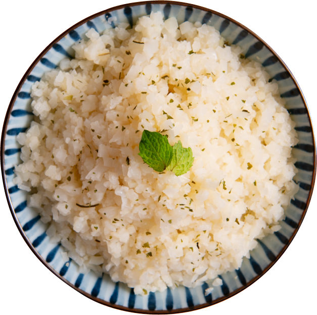

法式舒肥工序
採用60度低溫真空烹飪
透過時間與溫度的精準控制下
在不添加化學添加物的同時
保留最原汁原味的雞肉美味與軟嫩
品質嚴選
檢驗合格優質雞肉，食用好安心
無任何化學添加
全程冷鏈低溫新鮮直送
優質高蛋白，增肌減脂必備
低卡減醣 高蛋白質
墨西哥茴香舒肥雞
Fennel Chicken
今天來點異國料理吧！
加入洋蔥、香蒜、小茴香、辛香料
及多種香草調味的獨特香氣，與
雞胸肉一起醃製。
輕柔按摩，讓肉的每寸肌理都包
覆滿滿的醬汁，表面沾附的豔紅
不會辣，輕鬆好入口！
適合喜歡較重調味的妳
綠蓉青醬舒肥雞
Pesto Sauce Chicken
濃郁青醬，加入牛奶與其他調料的完美混搭，散發出來的芬芳香氣真的會讓人口水直流！
接著與軟嫩雞胸肉一起舒肥…那口齒留香的清爽滋味真的是好滿足吶！
適合喜歡清爽滋味的妳
迷迭香草舒肥雞
Rosemary Chicken
使用新鮮香草及迷迭香調製，簡單又不失經典，帶出雞肉本身的香氣，把滿滿的高蛋白通通吃下肚!
適合喜歡原汁原味的妳
日式照燒梅花豚
Teriyaki Pork
帶有醬燒香氣，一向是討人喜歡的經典口味。洋蔥帶出的偏甜口感，加上梅花豚本身的鹹香，成就大人小孩都難以抗拒的美味!
適合喜歡日式風味的妳
港式鹽蔥燒肉豚
Pork with salt & spring onion
精心特調嗶啵青脆的蔥鹽醬，搭上低溫舒肥豚肉，滿口鹹香好滋味，經典港式風味燒肉，絕對一口接一口，停不下來啊!
適合喜歡滿滿蔥香的妳!
無任何化學添加物!
除了增肌減脂
多補充蛋白質的攝取還有什麼好處?
妳知道，蛋白質除了幫助長肉外，
讓毛髮與指甲增長，以及做出身體各種抗體、
酵素、細胞組織等等，都需要蛋白質的協助嗎?
若缺乏蛋白質，易出現:
- 肌少症
- 頭髮易斷
- 容易餓
- 情緒起伏大
- 水腫
- 易骨折
- 皮膚發炎
- 傷口復原慢
- 指甲變脆
食用方式
享受輕卡飲食 減擔又簡單
-
1.隔水加熱
解凍後將整份包裝放入熱水浸泡熱水約10分鐘，等內外皆回溫即可食用。
-
2.退冰即食
常溫退冰後撕開即可直接食用。(依氣候約40~60分鐘)
-
3.鍋底香煎
解凍後，使用平底鍋微煎10~15秒。
-
4.微波加熱
解凍後，撕開取出微波加熱約1分鐘即可享用。
澱粉替代好物
澱粉控必吃
花椰菜飯
- 白飯的1/9熱量
- 白飯的3倍纖維量
- 豐富的膳食纖維
- 零澱粉無麩質
- 豐富維生素
低卡高纖的超級助瘦食材
替代精緻澱粉
花椰菜兼具低卡、高纖的特點有效降低碳水化合物攝取並同時擁有飽足感!
每100公克的白花椰菜
熱量僅23大卡，
纖維質含量則是2克，
幫助腸胃蠕動，養瘦超營養。
營養價值極高
眾多營養成分，能提升免疫力、幫助肝臟排毒。
並加速新陳代謝，也能幫助血
液循環，並有效幫助水分代謝，
排除水腫虛胖問題。
三種蔬菜組合
除了肉類主食之外，還想來
點蔬菜均衡飲食嗎?
我們也有準備綜合蔬菜，不
管居家或是辦公室午餐，都
能吃的又飽又健康!
給我更多青花菜
我們知道，天然好吃還能瘦
身的青花菜人人愛!
不管單吃還是當配菜，都是
餐桌上的最佳配角!
台農57號地瓜
標準台農57號黃皮黃肉。可蒸
可烤，入口鬆軟香甜。富含多種
維生素及纖維，幫助腸胃蠕動，
還能增添飽足感!